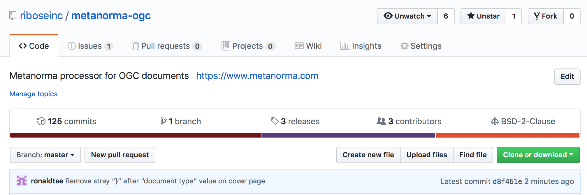
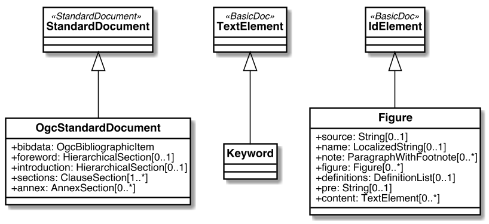

$ metanorma -t ogc my-ogc-tc-document.adoc
# => Creates OGC document in XML, Word, HTML, PDFDocTeam — Metanorma for OGC
110th OGC Technical Committee
Singapore, #OGC19S
February 25, 2019
Ronald Tse
Ribose Founder and CEO
Metanorma
| End-to-end publication toolchain for standardization documents | Supports multiple standardization bodies | ||
|---|---|---|---|
 | 
|
ISO/TC 154, ISO 36000 series “Standardization documents”
| “Standardization document” | ISO 36000 series |
|---|---|
Document that supports standardization activities or produced through a standardization process.
Goals:
|
Parties involved:
|
Metanorma is created by Ribose and standardized by ISO/CalConnect
| Ribose: protection of freedom and liberty | CalConnect: SDO for collaborative technologies |
|---|---|
We focus on:
We are the:
|
|
Metanorma: Standard documents amongst SDOs can be standardized at the document model level
| Context of standardization | Purpose and requirements |
|---|---|
⇒ Ensure consistent structure and layout of documents The structure of standards (document requirements) is often well-defined, e.g. ISO DIR 2, CalConnect CC/DIR 10002. Common requirements include:
|
Metanorma: how does it work?
Metanorma allows you to create a compliant standard document with minimal effort.
With a single command:
⇒ Fun fact: ISO/TC 154/WG 5 ISO 8601-1 and ISO 8601-2 were both submitted in Word generated using Metanorma.
Metanorma adoption example: CalConnect enforces document requirements through technology
“Metanorma for CSD” provides:
| Workflow: |
Metanorma-CSD in action: CalConnect CC/R 18003 in HTML and PDF
 |  |
Metanorma for OGC (software)
Metanorma processor for OGC: https://github.com/riboseinc/metanorma-ogc

Metanorma-OGC in action: mini document registry

Metanorma-OGC in action: TC PnP (HTML, Doc)
| HTML | Word |
|---|---|
 |
Metanorma-OGC in action: WFS 3.0 (HTML, Doc)
| HTML | Word |
|---|---|
Metanorma supported on Linux/macOS
Linux/others:
as a Ruby gem:
gem install metanorma-clivia Docker: https://github.com/riboseinc/metanorma-docker
macOS: via Homebrew (https://www.metanorma.com/blog/01-23-2019/metanorma-on-macos-via-homebrew/)
$ brew tap riboseinc/metanorma
$ brew install metanormaMetanorma supported on Windows
Windows: via Chocolatey (PowerShell) (https://www.metanorma.com/blog/12-25-2018/metanorma-on-windows-via-chocolatey/)
> Set-ExecutionPolicy Bypass -Scope Process -Force; iex ((New-Object System.Net.WebClient).DownloadString('https://chocolatey.org/install.ps1'))
> cinst ruby --version 2.5.3.101 -y
> cinst msys2 --params "/NoUpdate" -y
> $env:ChocolateyInstall = Convert-Path "$((Get-Command choco).path)\..\.."
> Import-Module "$env:ChocolateyInstall\helpers\chocolateyProfile.psm1"
> refreshenv
> ridk install 2 3
> cinst metanorma -y
> refreshenvMetanorma-OGC in action: OGC TC PnP document
Document example: https://github.com/riboseinc/ogc-tcpnp
Try it yourself!
$ git clone https://github.com/riboseinc/ogc-tcpnp
$ cd ogc-tcpnp
$ metanorma ogc-tcpnp.adoc
$ # or `bundle install` and `bundle exec metanorma ogc-tcpnp.adoc`| See links for rendered versions here: https://github.com/riboseinc/ogc-tcpnp |
Compiling the sample document via docker
In a directory containing the Metanorma document, run this:
docker run \
-v "$(pwd)":/metanorma/ -t ${flavor} -x ${extensions} \
ribose/metanorma ${my_document_file}Where,
${my_document_file}is the name of the Metanorma document file, such asogc-12345.adoc${flavor}is the flavor of Metanorma document, such asogc${extensions}is a list of extensions desired, such asxml,html,doc
docker run \
-v "$(pwd)":/metanorma -t ogc -x xml,html,pdf,doc \
ribose/metanorma ogc-tcpnp.adocVerify that the files have been compiled.
Detailed steps to creating a Metanorma OGC document
Text input is in AsciiDoc (“.adoc”) format
Compiling
The toolchain compiles input text into an XML file called OGC XML, the serialization format of
OGC.
Rendering
The toolchain converts OGC XML into the chosen output format, currently HTML, PDF and Word.
| In practice, steps 2 and 3 are automatic. |
Metanorma: Rendering content for multiple publishers
What if I want to publish an ISO Standard from an OGC Standard?
Just substitute -t ogc with -t iso for the metanorma command.
$ metanorma -t iso \
-x xml,html,pdf,doc \
my-rice-document.adoc| Since the OGC structure is very similar to the ISO document structure, no major structural changes are necessary (change of Foreword content is however necessary). |
Bibliography handling: Relaton
Document identifiers of certain standard bodies are automatically fetched via a tool named Relaton.
This includes:
ISO
IEC
IETF
NIST pubs
Chinese standards
(soon CalConnect, ITU…)
Let’s try adding one now.
Bibliography handling: Adding an auto-fetch entry
In any bibliography section (i.e. “Normative references” or “Bibliography”), add this line:
* [[[ISO27000,ISO 27000:2018]]], _ANYTEXT_This means that the identifier “ISO 27000:2018” should be used to refer to the document for the reader, and ISO27000 will be the handle. In the content, add a reference to this handle:
For vocabulary related to information security, please refer to <<ISO27000>>.Compile the document, notice that it says Fetching ISO 27000:2018 ….
Metanorma identifies the prefix given in “ISO 27000:2018” and knows to find it on https://www.iso.org. The resulting entry is actually “ISO/IEC 27001:2018” — the correct entry is detected and automatically inserted in the bibliography.
The resulting information will be stored in a global (~/.relaton) or local cache (./relaton). Normally it only fetches once unless the entry expires.
Bibliography handling: Adding a non-ISO auto-fetch entry
In normative references, non-CSD and non-ISO documents must still be given a document code (or title) in their bibliographic anchor:
* [[[RFC4291,IETC RFC 4193]]] _Unique Local IPc6 Unicast Addresses_,
October 2005. http://www.ietf.org/rfc/rfc4291.txt
* [[IANAMediaTypes,IANA Media Types Assignment]]], March 2017.
http://www.iana.org/assignments/media-types/media-types.xthmlIn informative references, non-ISO documents are both displayed and cited with reference numbers in brackets. Those numbers are given in the reference anchor instead of the ISO document code. ISO references appear before non-ISO references; the reference number is expected to be correct in context:
* [[[IEC61010-2,IEC 61010-2:1998]]],
_Safety requirements for electric equipment for measurement, control,
and laboratory use -- Part 2: Particular requirements for laboratory
equipment for the heating of material_
* [[[ref10,10]]] [smallcap]#Standard No I.C.C 167#.
_Determination of the protein content in cereal and cereal products
for food and animal feeding stuffs according to the Dumas combustion
method_ (see http://www.icc.or.at)Adoption models: Metanorma-OGC (OgcStandardDocument) (1/2)

Adoption models: Metanorma-OGC (OgcBibliographicItem) (2/2)

Thank you!
Questions welcome!
OGC